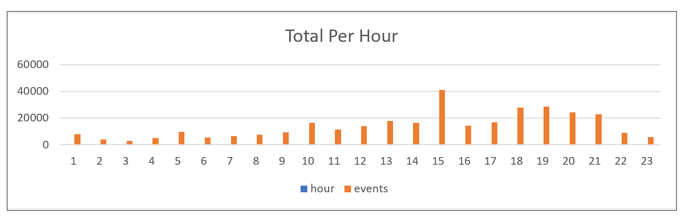

The purpose of this document is to centralise the knowledge of the EventStream and its capabilities so that team members can gain a holistic understanding of its capabilities and possible future use.
The event stream is an append only, immutable log produced in SQL Server based upon events created in the quest database. It was deployed to production in December 2018 as a replacement for the quest history database.
It was constructed to overcome the following problems
1. The quest database was pushing every version of every row on every table to a QuestHistory database that mirrored the structure of the Quest database 590 tables. This was costly to maintain and unwieldy to develop against.
2. Significant resources were being expended on attempting to reconstruct state of entities after the fact for historical purposes
3. Multiple processes were attempting to answer similar “change” questions using contradictory logic.
The intention of the event stream was to build a single source of truth that could publish what happened, as it happened; and then notify products of the exact changes that had occurred. There are currently 6 products within the Quest eco-system that use the EventStream today in production to respond to changes as they occur: • AssignmentAudit • ConfidentialAccess • PersonReadModel • QuestReports • Restrictions • SOLR
How its built The event stream uses a process built in PowerShell to analyze all tables in our quest database, including their foreign key relationships to one another. This process then generates triggers for each table that can compare a newly modified row with its predecessor and derive the changes that occurred, column by column. All the code used in the EventStream code is automatically generated through Powershell scripts that can detect change to DDL. As the schema evolves, the event stream triggers are regenerated automatically to reflect the altered DDL. This is not a Quest specific solution, an event stream can be produced for any of our relational databases that use integers as their primary keys.
How it runs At runtime, the jumping off point is a single table called EventSource. All 591 tables of Quest are funnelled into this single table structure in the order in which the events are produced. Each table pushes a payload of the changed columns to a processor queue as part of the transaction commit on our SR replication of the Quest database. It is then picked up by a processor which can trace the root entities of each record. The final output is then persisted to a table called the EventSource table which is the raw stream of all events. When this happens, it triggers a process to cross reference each event with a service list that determines which products need to be notified of changes. E.g. a change to CompanyLocationPostalAddress is sent to PersonReadModel, AssignmentAudit and QuestReports. This entire process gives us a single log table that contains every change to the Quest data since December 2018.
There are 9 columns in each event, and they all serve equally important purposes
| Column | Purpose | Notes |
|---|---|---|
| Id | Unique ID of the event | Primary key |
| EventType | Insert, Update, Delete | Type of change |
| TransactionTable | Name of the affected table | Source |
| TransactionTableRow | Primary key ID | Row identifier |
| ChangeSet | JSON representing changes | Old/New values |
| EmployeeId | Who made the change | - |
| TriggerInvokeTimestamp | Timestamp of change | - |
| TransactionId | Correlation ID | Links grouped changes |
| AffectedEntities | Root-level relationships | e.g. Person, Company |
[
{{
"RootEntityTypeId": 1,
"RootEntityId": 8584947
}},
{{
"RootEntityTypeId": 2,
"RootEntityId": 220014024
}},
{{
"RootEntityTypeId": 3,
"RootEntityId": 2001036837
}}]-- Get all changes for a specific transaction
SELECT * FROM eventstream.eventsource
WHERE TransactionId = '3539A5B7-863C-4575-A260-D01565D963F0'
ORDER BY 1 DESC;
-- Jobs with primary indicator switched from 1 to 0 in last 7 days
SELECT COUNT(*) FROM eventstream.eventsource
WHERE TriggerInvokeTimestamp > '20200401'
AND TransactionTable = 'PersonJob'
AND ChangeSet LIKE '%"ColName":"PrimaryIndicator","New":"0","Old":"1"%';The Event Stream powers downstream products by triggering processors on data changes. Each product reacts based on a whitelist of entities it subscribes to. This decouples the systems and removes redundant polling.
Roughly 10M events/month. Peak rates are ~3/sec. Load patterns are predictable and manageable. Example chart:
Using AWS DMS to publish EventStream to Kinesis → Firehose → S3. Instances typically T2 or C4 class. Estimated cost: ~$11/mo for Kinesis.

Glue and Athena can crawl and process the streamed JSON files. This allows efficient querying and transformations. Flattened structure example:

Alternative design proposes replicating Quest to Aurora and using Redshift Federated Query to directly query operational data for BI needs, bypassing some ETL stages.
Learn more at Redshift Federated Query Overview.